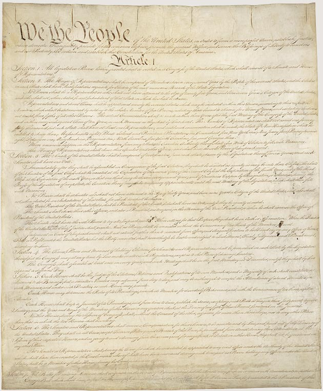
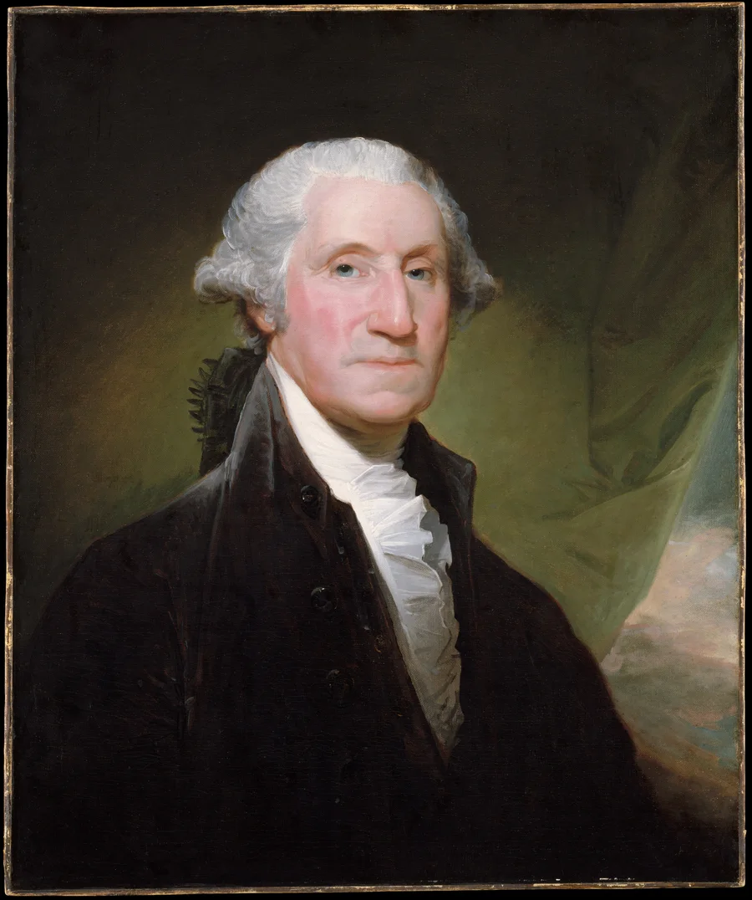

American History · Chapter lesson
Designing a constitutional republic
Read a short illustrated account, examine primary sources, and discuss the evidence.
1783–1800
Designing a constitutional republic
Delegates signed the Constitution in 1787. After ratification, the new federal government began operating in 1789; the Bill of Rights followed in 1791. The Constitution divides power among legislative, executive, and judicial branches. Federalism shares power between national and state governments. Amendments let later generations change the framework.
Discuss: Why divide government power rather than give it to one person?
National Archives: Bill of Rights →
